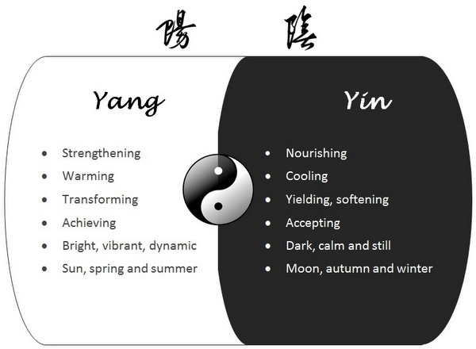

Yin Yoga and Daoism
by Chen Li
Yin Yoga is a calming, therapeutic and nourishing practice. Physiologically, it improves mobility in the joints and opens the body through releasing deep held tension over layers of connective tissues. Energetically, it stimulates the flow of Qi (also called prana/life force) in the target areas. In addition, the practice benefits the mind through encouraging us to cultivate mindfulness, acceptance, patience and contentment.
Yin yoga primarily works on the connective tissues in the body e.g. fascia, ligaments, bones and joints. Fascia in our bodies has many layers and it seamlessly connects and permeates through all our muscles, ligaments, bones, nerves, blood vessels and organs. It is said that fascia is the tissue that holds most of our stress, physical tension as well as emotional stress. Scientific research shows that certain cells found in the connective tissues not only communicate directly with the nervous system, but also communicate with each other.
Fascial web connects and communicates throughout the body; thickened areas transmit strain in many directions and make their influence felt at distant points, much as a snag in a sweater distorts the entire sweater. This is the mechanism through which reflex or pressure points become manifest. Lines in the body are not mystical,they are where forces balance.
~ Dr. Ida Pauline Rolf (Biochemist)
Fascia forms a body-wide network that functions in a nerve-like signalling capacity. Most of the acupuncture (Qi) points are located in the areas of inter-muscular or intramuscular connective tissue planes. In other words the acupuncture (Qi) points are located in areas where fascia network converges.
~ Research finding from Dr. Helen Langevin (Neurologist and Endocrinologist) University of Vermont
The soft connective tissues are sometimes referred to as Yin tissues, which are more plastic and require gentler but long holds for them to release. This is unlike the Yang muscle tissues which are elastic and respond better to repetitive, rhythmic movements.
Yin yoga is based on Chinese Daoist (Taoist) philosophy where the Yin and Yang concepts originate.
The Dao (also called The Way or Tao) is what cultivates the life force. It is the notion of the universal law of being and the world unfolding itself, ever changing, ebbing and flowing like the phases of the moon, the changes of seasons and tides in the ocean in a never ending cycle. It recognises how opposite forces such as Yin and Yang are interconnected in the natural world and how they give rise to each other.

Yin and Yang qualities.
Nothing is forced, everything comes about naturally. Everything that thrives adapts to changes, including our body and mind. To live according to the Dao is to live in harmony with nature and understand non-striving - coming into harmony with all things at all moments. This is the path of acceptance, peace, insight and wisdom. It is the art of conscious living and balancing effort with ease in all that we do.
In Yin Yoga, we focus more on cultivating the Yin qualities. Typically, Yin poses in a class are held for 3 to 5 mins. It's calming but challenging at the same time, as we turn our attention inwards, softening into the pose; staying in stillness and sometimes facing strong physical sensations as the body opens.
We focus on the intention behind each pose i.e. the target areas, while being guided by the sensations in our own body, instead of focusing on the aesthetic form. The quality of our practice has nothing to do with our degree of flexibility or strength. Rather, it is about working with our edge (our body's limits) with self-awareness.
"We do not use the body to get into a pose. We use the pose to get into the body.
Yoga is an inward practice designed to build awareness, non-attachment, equanimity and contentment."
~ Bernie Clark